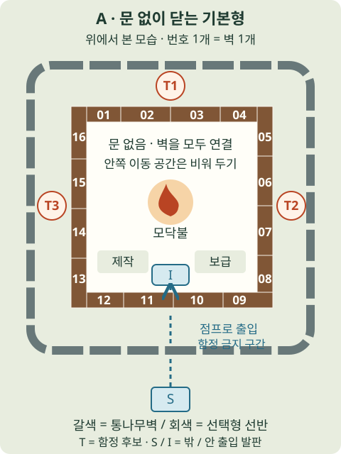
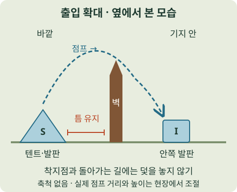
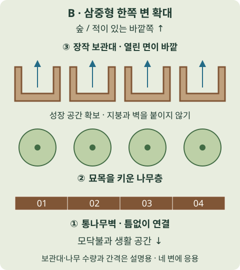

STEP 1 · 시작 직후
불과 한 끼를 확보
가까운 곳부터 탐색하고, 돌아올 길을 기억하세요.
- 도끼·가방을 챙겨 나무와 먹을 것을 수집.
- 모닥불에 연료를 넣고 여분을 비축.
- 식량과 귀환 동선을 확보한 뒤 탐색 범위를 넓히기.
캐릭터는 무엇을 고르고, 낮에는 무엇을 챙길까?
제작·아이 구조부터 첫 99일, 2026 할로윈 공략까지.
장작과 건설 재료 확보가 편해져요.
가방 2칸 추가로 재료 운반을 도와요.
보급을 갖춘 뒤 날짜 진행을 높이세요.
‘99 야간숲’을 99 Nights in the Forest로 보고 작성했습니다. 여기서 캐릭터는 아바타 외형이 아니라 클래스(직업)를 뜻합니다. 추천은 첫 99일 달성을 위한 판단이며, 전체 클래스의 절대 티어표는 아닙니다.
무과금·초보도 기본 클래스로 시작할 수 있어요. 보유 다이아와 하고 싶은 역할에 맞춰 고르세요.
70다이아. 좋은 도끼와 나무 수급 이점으로 초반 기반을 만들기 편합니다. 처음 한 개만 산다면 가장 무난한 선택입니다.
| 클래스 | 다이아 | 추천하는 상황 / 장점 | 고르기 전에 알 것 |
|---|---|---|---|
| 수집가Scavenger | 25 💎 | 저예산 입문. 레벨 1부터 가방 공간 +2. | 전투 장비를 주지는 않아요. 이미 70개에 가까우면 나무꾼까지 모아도 좋아요. |
| 나무꾼Lumberjack · 입문 추천 | 70 💎 | 기지 운영·솔로 입문. 좋은 도끼로 시작하고 나무 수급에 이점. | 전투용 무기와 방어구는 따로 찾아야 해요. |
| 에일리언Alien | 100 💎 | 저비용 전투 입문. 레이건으로 시작하고 야간 시야가 좋아요. | 에너지 충전이 필요해요. 과열 중 달리기가 느려지므로 게이지를 비우지 마세요. |
| 메딕Medic · 파티 지원 | 40 💎 | 친구가 자주 쓰러질 때. 레벨 1에서 붕대 2개와 빠른 부활. | 혼자 할 때는 핵심 장점을 살리기 어려워요. 메디킷 시작은 레벨 3 효과예요. |
| 사이보그Cyborg · 고예산 전투 | 600 💎 | 다이아가 충분할 때. 레이저 캐논과 외계 갑옷으로 전투를 시작해요. | 과열하면 피해를 받고 방어력도 잠시 낮아져요. 비싼 클래스가 생존을 보장하지는 않아요. |
가격과 능력은 공개 커뮤니티 자료 기준입니다. 패치·할인에 따라 달라질 수 있으므로 구매 전 게임 안 표시를 확인하세요. 클래스 레벨 1과 최대 레벨 효과를 구분했습니다.
정해진 날짜보다 준비 상태가 중요해요. 아래 단계는 초보용 운영 추천입니다.
가까운 곳부터 탐색하고, 돌아올 길을 기억하세요.
같은 시간에 더 많이 가져올 수 있게 만드세요.
날짜 진행을 높이면 99일까지의 반복을 줄일 수 있어요.
클리어가 목적이라면 불필요한 위험을 줄이세요.
시스템 참고: 모닥불생존 팁Crock Pot 제작
모닥불은 최대 레벨 6. 레벨을 높이는 동안에도 다음 탐색과 습격을 버틸 연료·음식을 남겨두세요. 구조 중 해가 지면 나머지는 다음 낮에 이어가도 됩니다.
기본 1 + 침대 2 + 아이 1 = 4
일반 모드의 기본 계산 예시입니다. 진행 중인 게임의 날짜 표시를 우선하세요. 이 수치는 실제 플레이 시간이나 남은 밤 수를 보장하지 않습니다.
진행 규칙: Days 위키침대별 날짜 보너스아이 위치·구조 안내
기본적인 적을 중심으로 정리했습니다. 이벤트·특수 상태에서는 화면 경고를 먼저 확인하세요.
일반 야간 위협을 총으로 잡으려 하지 마세요. 손전등으로 잠깐 멈추게 할 수 있지만 영구적인 보호는 아닙니다. 배터리를 챙기고, 불이 켜진 기지로 돌아갈 시간을 버는 용도로 사용하세요.
지상에서 지켜보는 상태라면 움직임을 멈추고 경고 게이지를 살피세요. 먼저 손전등을 비춰 자극하지 마세요. 추격이 시작된 뒤에는 계속 달려 도망칠 수 있다고 믿지 말고, 밤 탐색 자체를 줄이는 편이 안전합니다.
정면으로 계속 달리지 말고, 돌진을 준비할 때 옆으로 벗어나세요. 지형을 이용해 경로를 비틀되, 나무는 충돌로 부서질 수 있으니 완전한 방패라고 생각하면 안 됩니다.
모닥불 주변이라고 습격까지 막아주지는 않아요. 원거리 적의 사선을 끊고, 한꺼번에 포위되지 않게 이동하세요. 팀에서는 한 명이 적을 유인하고 다른 사람이 공격·회복을 맡으면 편합니다. 벽·함정 배치와 습격 전투 순서 보기 ↓
아이 구조 때 여러 마리를 동시에 깨우지 마세요. 장거리 무기와 거리 조절을 활용하고, 체력이 낮아지면 일찍 물러나세요. 곰 구역은 방어구·탄약·회복품을 갖춘 뒤 도전하는 것을 추천합니다.
전투가 끝났어도 음식과 불이 바닥나면 탐색이 끊깁니다. 출발 전에 먹고 예비 식량을 챙기세요. 기지에는 연료 더미를 남겨, 복귀하자마자 다시 불을 관리할 수 있게 하세요.
일반 모드 기준 · 밤에 북소리와 습격 경고 뒤 기지로 오는 인간형 적 무리라면 Cultist Raid입니다. 요새에 들어가 싸우는 전투와는 달라요.
위키는 첫 습격을 네 번째 낮·밤 주기, 이후 대략 네 주기마다로 안내해요. 침대·아이 구조로 건너뛰는 표시 날짜와 실제 밤의 반복은 구분해야 합니다. 정확한 날짜를 외우기보다 붉은 경고와 “오늘 밤 공격받는다”는 안내가 뜨면 탐색을 끝내세요.
첫 습격은 주로 낡은 도끼를 든 근접 적으로 소개됩니다. 이후 석궁 적이 합류하고 근접 무기도 강해져요. 앞의 적에게만 집중하다 멀리서 날아오는 화살에 맞기 쉬우니, 싸우기 전에 석궁을 든 적의 위치부터 찾으세요.
구조·할로윈 방문은 미루고 복귀하세요. 배고픔과 체력을 회복하고, 불을 채운 뒤 여분 연료를 손닿는 곳에 둡니다. 전투 중 연료가 바닥나면 불 관리와 적 회피를 동시에 해야 해요.
창 같은 근접 무기와, 있으면 총·탄약을 챙기세요. 사용할 장비를 쉽게 고를 수 있게 놓고, 재장전 때 숨을 벽이나 큰 지형을 정합니다. 설비 사이에 끼지 않도록 기지 가장자리의 이동 공간을 비워요.
근접 무리가 붙었다면 먼저 거리를 벌리고, 안전하게 공격할 수 있을 때 석궁 적을 우선 노리세요. 벽 옆에서 잠깐 나와 공격하고, 재장전은 엄폐 뒤에서 합니다. 사격할 때도 오래 서 있지 말고 옆으로 자리를 바꾸세요.
근접 적을 함정 쪽으로 유인하거나 거리를 벌려 하나씩 공격하세요. 체력이 떨어지면 적에게서 떨어져 회복합니다. 마지막 적까지 확인한 뒤 불·함정·탄약을 다시 정비하세요.
문 없이 통나무벽을 둘러치고 플레이어가 점프로 넘어 다니는 방식이 맞아요. 다만 두 영상은 확장 재료가 다릅니다. 먼저 A의 안쪽 벽을 완성하고, 재료가 남으면 원하는 확장형을 고르세요.
통나무벽으로 안쪽을 닫고, 바깥에 Wood Rain Storage를 두며 그 사이에 나무층을 만드는 삼중 구성입니다. 보관대의 열린 면은 숲 쪽으로 향해요. 아래 B 확대도에서 순서를 보세요.
안쪽은 통나무벽, 바깥은 선반으로 둘러 공간을 한 겹 더 만들어요. 레이저 함정은 두 벽 사이에 둡니다. 텐트를 벽에 붙이지 않고, 간격을 둔 대각선 점프로 출입하는 설명이 나옵니다.
자료 확인 2026.10.27. 두 영상은 2025년 촬영·게시 자료입니다. 아래 그림은 영상의 배치 원리를 따라 만들기 쉽게 재구성한 도면으로, 영상 속 벽 수나 실제 게임 거리를 그대로 측정한 설계도는 아닙니다. 현재 버전에서 직접 플레이해 재현한 결과는 아닙니다.

기본 벽 재료 예시: 영상의 Log Wall 단가 목재 12 기준으로 16개는 목재 192. 외곽 선반·발판·제작대·연료는 별도입니다. 처음부터 전부 모으느라 불·음식을 소진하지 말고, 실제 제작 화면의 단가를 확인하세요.

간격은 몇 칸인가요? 두 영상에서 재현 가능한 고정 수치는 확인하지 못했어요. 낮에 빈손으로 양방향 출입을 여러 번 성공하는 거리를 맞추세요. 벽을 따라 비스듬히 뛰는 동작도 연습하고, 적이 같은 발판을 쓰면 바깥 물체를 더 떨어뜨리거나 출입 위치를 바꾸세요.

모서리 침입이면 벽 끝의 틈과 경사를 확인하고, 텐트·선반을 타고 침입하면 바깥 발판 간격을 늘려 보세요. 적이 쌓여 월담하면 방치하지 말고 안전한 위치에서 정리합니다. 무조건 벽을 한 겹 더 쌓는 것보다 넘어온 지점을 먼저 보는 편이 좋아요.
낮에는 안팎 출입, 착지점, 불·음식 접근을 확인해요. 습격 때는 안쪽 바닥에서 석궁 피해와 월담을 확인합니다. 한 번 막았더라도 후속 습격의 적 수가 늘면 달라질 수 있어요. 불 유지·회복·남은 적 처리는 계속 필요합니다.
추가 대조: 2026.05 · 벽·선반 차이와 적의 월담2025.09 · 단계별 벽 확장·곰덫 설치 순서곰덫 재설정
첫 근접 습격은 창 등으로 거리를 유지하며 하나씩 상대하는 연습을 하세요. 벽 모서리·함정으로 무리가 한꺼번에 붙는 것을 줄이고, 적 여럿을 상대로 도끼를 들고 맞서 때리는 방식은 피합니다. 석궁 적이 섞이면 엄폐로 화살을 피하면서 접근할 기회를 보세요. 근접 적까지 몰린 상태에서 석궁 적에게 무작정 돌진하지 마세요. 다음 습격 전에는 총·탄약·방어구 확보를 탐색 목표로 삼으세요.
완성한 벽이라는 사실보다 적과 나 사이의 사선이 가려졌는지가 중요해요. 문·틈·벽 끝에서 몸이 노출되는지 확인하고 석궁이 있는 쪽 반대편으로 숨으세요. 낮은 가구나 선반 위가 안전하다고 가정하지 말고, 숨은 뒤에도 피해가 들어오면 즉시 위치를 바꾸세요.
남은 광신도 때문에 모닥불 연료 소모가 빨라진다는 위키 설명이 있어요. 날이 밝았다고 자동 해결됐다고 생각하지 말고 적이 남았는지 확인하세요. 위기 때 잠깐 엄폐해 회복하는 것과 습격을 방치하는 것은 다릅니다.
한 명이 근접 적을 유인하고 다른 사람이 석궁 적을 공격하세요. 여유 인원은 불·회복·함정 재설정을 맡습니다. 모두 같은 구석에 모이면 포위되기 쉬워요. 부활시키기 전에 쓰러진 사람 주변 적을 떼어 내고 엄폐를 확보하세요.
아래 수량은 정답 배치가 아니라 연습용 소규모 구성입니다. 첫 습격 전에 전부 못 만들었다면 무리해서 완성하지 말고, 무기·음식·불을 먼저 챙기세요.
큰 나무·지형과 짧은 벽을 이용해 화살을 피할 자리를 정하세요. 좁은 구석에 들어가지 말고 기지 가장자리를 돌아 움직일 길을 남깁니다. 불과 보급을 희생해 완전한 성벽부터 짓지 않아요.
보고된 비용은 Log Wall 1개당 목재 12, Bear Trap 1개당 고철 3입니다. 이 구성만 계산하면 목재 24 + 고철 6이고 제작대 업그레이드·연료 비용은 별도예요. 실제 제작 화면을 확인하고, 이미 있는 지형을 쓰면 벽 수를 줄이세요.
적이 우회한 쪽만 벽을 보강하고, 주운 방어 설계도를 자주 유인하는 경로에 놓으세요. 장기 생존에서는 탄약·회복·함정 상태를 함께 점검합니다. 벽을 늘리느라 냄비·연료 설비가 늦어지면 보급부터 복구하세요.
단가 참고(비공식): Log Wall·Bear Trap 제작대와 비용 · 수량과 진행 단계는 이 가이드의 추천입니다.
엄폐를 끼고 석궁 적을 우선 공격하세요. 한 번 공격한 뒤 옆으로 이동하거나 엄폐 뒤에서 재장전합니다. 여러 석궁에 동시에 노출되지 않도록 벽 끝에서 보이는 적 수를 줄이세요.
석궁 적을 보느라 멈추지 마세요. 먼저 옆으로 빠져 공간을 만들고 가까운 적을 함정으로 유인하거나 한 명씩 정리합니다. 붙은 적을 떼어 낸 뒤 석궁 사선으로 돌아가세요.
다음 습격은 가장자리의 엄폐 지점에서 시작해 보세요. 총 한 발로 가까운 적을 유인한 뒤, 따라오는 적이 적을 때 처리하고 다시 접근하는 방식이 커뮤니티에서 반복 제안됩니다. 멀리 숲으로 도망가기보다 기지와 귀환길을 보며 움직이세요.
한자리에 멈춰 조준을 끝내려 하지 말고 이동 → 짧게 조준·공격 → 다시 이동을 연습하세요. 게임이 제공하는 마우스 잠금·시점 고정 옵션이 있다면 조작이 편한지 시험해 보세요. 조작 설정은 본인에게 맞는 쪽을 쓰면 됩니다.
위 대응은 플레이어 경험담을 바탕으로 정리한 선택지입니다: 2026년 8월 · 가장자리 유인·모바일 이동·처리 순서 토론. 적을 정확히 한 명만 유인할 수 있다는 보장은 없어요.
작은 화면에서는 표를 좌우로 밀어 보세요. 내구도·피해량·제작 제한은 패치에 따라 달라질 수 있어 고정 타격 횟수는 적지 않았습니다.
| 방어물 | 주 역할 | 습격 중 사용법 | 주의할 점 |
|---|---|---|---|
| Log Wall통나무 벽 | 엄폐·경로 조정 | 석궁 사선을 가리고 재장전할 자리를 만들어요. | 틈·경사·벽 끝을 확인하세요. 높은 곳이나 벽 뒤라는 이유만으로 무적이 되지는 않아요. |
| Bear Trap곰덫 | 접촉 피해 | 지나가게 유인하고 작동한 덫을 안전할 때 다시 설치 상태로 돌려요. | 제작대 2단계, 보고 단가 고철 3. 한 번 밟으면 모든 광신도가 죽는다고 가정하지 마세요. 플레이어도 밟으면 피해를 받습니다. |
| 가시·철조망획득한 방어 설계도 | 반복 통과 유도 | 근접 적을 유인하는 길에 두고 옆을 돌아 움직여요. | 설계도는 배치에 쓰이는 소모품입니다. 설치물의 내구 상태를 점검하고 빈자리를 보충하세요. |
| Laser Fence레이저 울타리 | 접촉 피해 | 획득했다면 통로 안쪽 등 적이 지나는 곳에 배치해요. | 지속적으로 피해를 주면 부서진다는 위키 설명이 있어요. 초보 방어를 위해 위험한 UFO 탐색부터 할 필요는 없습니다. |
| 선반·자란 나무보조 장애물 | 배치 보조 | 동선을 늦추거나 지형에 맞는 보조 엄폐로 활용해요. | 적이 선반을 넘는다는 보고가 있습니다. 선반으로 기지를 메워 내 도주로와 고철까지 없애지 마세요. |
방어물 규칙: 곰덫 제작·재사용·자기 피해설계도 종류와 배치레이저 울타리와 내구벽·선반·통로의 한계
과거 위치 공략의 한계: 위키의 피뢰침 전술 수정 설명높은 곳 숨기·이동 전투 경험담 · 웹 자료 간 차이가 있는 배치법은 확정 공략으로 취급하지 않았습니다.
2026.10.27 웹 확인(커뮤니티 자료): 습격 주기·경고·적 강화·잔존 적석궁 적의 특징과 대응 · 배치와 전투 순서는 위 규칙을 바탕으로 한 초보용 추천이며 직접 플레이 검증은 하지 않았습니다.
아래 조합은 운영 예시입니다. 같은 클래스를 골라도 일을 분담하면 괜찮아요.
한 번에 한 목표만. 연료를 채운 뒤 탐색하고, 구조는 낮 시간을 넉넉히 남겨두고 출발하세요.
한 명은 장작·제작·음식, 다른 한 명은 탐색·무기·구조를 주도. 어려운 구조는 보급을 채우고 함께 가세요.
출발 전에 “누가 불을 보나”를 정하세요. 붕대는 팀 부활용 여유분을 남기고, 구조 중 쓰러진 팀원에게 무작정 달려들지 마세요.
0 / 6 완료 · 체크는 이 화면을 열어둔 동안 유지돼요.
아니요. 기본 클래스나 저렴한 클래스로도 목표에 도전할 수 있어요. 불·음식·귀환을 익히고, 게임을 계속할 생각이 들 때 원하는 클래스에 다이아를 쓰는 편을 추천합니다.
보통 처음에는 레벨 1입니다. 클래스별 성장 과제를 완료해야 다음 효과가 열립니다. 예를 들어 수집가의 빠른 상자 열기는 레벨 2, 메딕의 메디킷 시작은 레벨 3 효과입니다.
연료·식량이 소모되고 습격도 있어요. 먼저 보급과 방어를 갖춰야 합니다. 침대와 아이 구조를 통해 날짜 진행을 높이면 필요한 반복을 줄일 수 있어요.
모닥불 레벨과 제작대 레벨은 별개예요. 아래 순서는 첫 클리어를 위한 추천이며, 제작 비용은 게임의 현재 표시가 우선입니다.
장작·석탄·연료통은 불을 유지하는 데 씁니다. 불을 키우면 안개가 걷혀 더 먼 구역에 접근할 수 있어요. 먼 곳이 안 보인다고 무작정 걸어가지 말고 불부터 확인하세요.
제작에 쓸 통나무와 금속 잡동사니는 분쇄기에 넣어 Wood·Scrap을 확보합니다. 바닥에 쌓아 놓는 것만으로 제작 재료가 되지는 않아요. 장작을 전부 태우면 침대·설비를 만들 재료가 모자랍니다.
제작 재료를 모은 다음 제작대 업그레이드 항목을 선택하세요. 불을 올렸는데 냄비가 안 보인다면 제작대 레벨을 확인하세요. 제작대와 별도의 Workshop도 구분해야 합니다.
| 지금 상황 | 제작대 단계 | 우선 확인할 것 | 이유와 다음 행동 |
|---|---|---|---|
| 길을 잃어요 | 1 → 2 | Map → Compass·Sundial | 지도, 방향과 해 질 때까지 남은 시간을 확인해 귀환 계획을 세워요. 지도를 만든 뒤에는 탐색 전 목적지부터 정하세요. |
| 먹을 것이 자꾸 없어요 | 2 → 3 | Farm Plot → Crock Pot | 작물을 키우고 냄비로 스튜를 준비해요. 밭은 설치 즉시 음식을 주지 않으므로 자라는 동안 먹을 식량을 남겨두세요. |
| 계속 나무만 캐요 | 3 | Biofuel Processor | 여유 재료를 연료로 바꾸는 설비예요. 팀의 다음 식사까지 연료로 넣지 말고, 식량과 연료용 재료를 따로 모으세요. |
| 비·번개가 걱정돼요 | 2 / 3 | Wood Rain Storage / Lightning Rod | 젖지 않게 장작을 보관하고 낙뢰에 대비해요. 폭풍이 오면 출발보다 연료 게이지와 비축 상태 확인을 먼저 하세요. |
| 보급은 되는데 너무 오래 걸려요 | 1–4 | Old / Regular / Good / Giant Bed | 종류별 침대와 아이 구조를 늘리세요. 높은 단계 설비가 없어도 첫 99일에 도전할 수 있으니 모든 제작품을 목표로 삼지 않아도 됩니다. |
위치와 경비 수는 런·패치에 따라 확인이 필요해요. 고정 좌표나 인터넷의 마릿수를 외우기보다 현재 동굴과 안내판을 보세요.
아이의 단서를 확인하고 해당 구역이 안개 밖인지 보세요. 아직 갈 수 없는 구역이라면 모닥불부터 키웁니다. 출발 전 총·탄약·방어구·회복품과 귀환 식량을 준비하세요.
초반은 늑대, 이후 강한 늑대와 곰을 상대하게 됩니다. 동굴 주변 경비를 하나씩 유인하세요. 일반 동물을 아무 데서나 잡는 것과 구조용 열쇠 목표를 혼동하지 마세요.
필요한 경비를 처리한 뒤 열쇠를 챙겨 해당 동굴 문을 여세요. 적만 잡고 떠나지 말고, 아이를 운반할 수 있는 상태인지 확인하세요.
아이를 기지 모닥불의 구조 지점까지 데려와 내려놓고 구조 반영을 확인하세요. 동굴 문을 연 것만으로 끝나지 않아요. 팀이라면 한 명은 운반하고 다른 사람이 귀환길을 정리합니다.
구조 절차: 아이 구조·열쇠·기지 운반초반 진행 안내
10월 27일 확인 · 사탕을 모으는 Trick or Treat, Happy 복구 퀘스트, The Hollow 연동 도전은 서로 다른 목표예요.
Costume Box·Chest와 이벤트 늑대·광신도 등에서 파츠를 얻습니다. 집 위치도 낮에 확인하세요. 사탕을 모으러 나가기 전에 기지의 불과 식량부터 채워요.
Costume Closet에서 모은 파츠를 장착해요. 옷장은 이벤트 제작대 1단계에서 목재 3개로 만든다는 위키 안내가 있습니다. 외형용 아바타 옷을 입는 것과 달라요.
집 앞 상호작용으로 Trick or Treat를 진행해요. PC는 Knock / E 안내를 확인하고, 모바일은 화면 버튼을 따르세요. 집이 비활성 상태면 Halloween Candle을 요구하는지 현장 안내를 확인하세요.
모은 사탕으로 이벤트 물품을 골라요. 사탕은 다음 런에도 유지된다는 공략 보고가 있지만 코스튬 파츠는 방문에 사용하면 소모됩니다. 다음 집에 갈 옷도 준비하세요.
낮에 가까운 집 1–2곳과 돌아올 길을 정해 두세요. 세트를 준비한 뒤 밤에 방문하고 기지로 복귀합니다. 습격 경고가 뜨거나 연료가 부족하면 방문 횟수보다 생존을 우선하세요.
2025년의 촛불·물약·미로 공략을 올해 콘텐츠와 같은 것으로 읽지 마세요. 촛불 활성화 설명은 2026 자료 사이에도 차이가 있어, 현재 집 앞 요구 문구를 우선합니다.
2026 루프·소모·사탕 수치(비공식): Pro Game GuidesAll Things HowCostume Closet 위키
| 보상 | 보고 가격 | 무엇을 위한 것? | 추천 판단 |
|---|---|---|---|
| Fancy Dressed | 30 🍬 | 이벤트 클래스. 1레벨 코스튬 드롭, 2레벨 Treat 확률, 3레벨 추가 사탕 효과. | 남은 기간 동안 사탕을 계속 모을 사람에게 우선 고려. 구매 즉시 최대 레벨 효과가 열리는 것은 아니며, 위키는 할로윈 종료 후 사라지는 계절 클래스로 안내해요. |
| Badge Pack | 25 🍬 | 기본 3개 외 추가 10개 할로윈 도전 해금. | 업적 수집이 목적일 때. 구매만으로 도전 완료나 보상 지급이 되지는 않아요. |
| Candy Corn Bunny | 80 🍬 | 토끼 펫의 할로윈 스킨으로 소개되는 수집 보상. | 꾸미기가 목적일 때 목표로. 생존용 강한 무기와 같은 보상으로 생각하지 마세요. |
| Vampire Alpha Wolf | 200 🍬 | 알파 늑대 펫의 할로윈 스킨으로 소개되는 수집 보상. | 장기 수집 목표. 한정 여부·필요 조건·실제 가격은 구매 전에 게임에서 확인하세요. |
위 가격은 10월 17–27일 공략·위키에서 확인한 보고값입니다. 상점 실시간 가격을 직접 확인한 것은 아닙니다. 장식·스킨의 효과와 계정 보유 여부는 구매 화면에서 확인하세요.
가격·효과: 상점 보상Fancy Dressed 레벨 효과Badge Pack 업데이트 기록
Candy Collecting: 첫 사탕 획득. Carving: Pumpkin Carving Station에서 호박 조각. Costuming: 완전한 코스튬 세트로 Trick or Treat. 먼저 세 가지를 해보며 흐름을 익히세요.
한 밤에 풀세트로 3회·4회 방문, 장식 30개 동시 배치, 한 런에서 호박 30개 조각, 99일 전 모든 풀세트 사용, 비밀 조합 사용, 매 밤 사탕 받기, 누적 100회·500회 방문, 한 번에 사탕 13개가 보고돼요.
배지 조건: 2026 할로윈 13개 배지 정리10월 19일 추가 배지 기록
기지 근처 Happy와 대화하고 낫을 챙겨 퀘스트 표시를 따라가세요. 낫으로 거미줄을 치우며 흩어진 부품을 기지의 허수아비 윤곽에 돌려놓는 흐름입니다. 부품이 있는 창고·풍차·석조 건물·호박밭은 모닥불로 탐색 범위를 넓히며 찾으세요. 마지막에는 Ram에게 빼앗긴 머리를 되찾는 단계가 이어진다는 공략 보고가 있습니다.
거미줄이 안 잘리면 일반 도끼 대신 퀘스트 낫과 요구 레벨을 확인하세요. Ram을 무작정 쫓기 전에 음식·회복·야간 귀환 경로부터 준비하세요. 사탕 방문을 시작하기 위해 이 퀘스트 전체를 먼저 끝낼 필요는 없습니다.
진행 참고: Happy 부품·낫·Ram 단계 · 해당 퀘스트의 유지 여부는 현재 서버에서 확인하세요.
공식 확인 Roblox의 The Hollow는 여러 게임이 참여하는 별도 이벤트입니다. 공식 발표는 미국 태평양 기준 10월 22일 시작, 10월 31일 피날레, 11월 2일 정오 PST까지 보상 수령으로 안내하며 99 Nights의 사슴이 참여합니다. 한국 기준 시작은 10월 23일 오전 6시, 보상 수령 마감은 11월 3일 오전 5시입니다. 이 마감을 99 Nights 내부 퀘스트의 종료 시각으로 단정하지 마세요.
위 1–4의 상세 공략·액세서리 연결은 팬 위키와 공략 보고 기준이며 직접 플레이로 검증하지 않았습니다. 일반 도전에서는 랜턴을 활용하세요. 랜턴을 쓰지 않는 Omnipotence는 별도 고난도 목표로 소개됩니다.
2026년 10월 27일 웹 자료 확인. 공식 게임 페이지와 Roblox의 The Hollow 발표는 게임 식별·전체 이벤트 일정에, 커뮤니티 위키·공략은 세부 규칙 확인에 사용했습니다. 직접 게임에 접속해 검증한 공략은 아닙니다. 추천 순서와 파티 구성은 위 정보를 바탕으로 정리한 판단입니다.
일반 모드의 첫 99일과 2026 할로윈 주요 흐름을 다룹니다. 모든 신규 클래스·적·하드코어를 포괄하지는 않습니다. 할로윈 세부 규칙은 비공식 자료이며, 공식 확인 범위와 출처를 각 항목에 표시했습니다. 가격·재고·패치 후 수치는 실제 게임 표시가 우선합니다. 게임 화면을 복제하지 않은 안내용 일러스트를 사용했습니다.